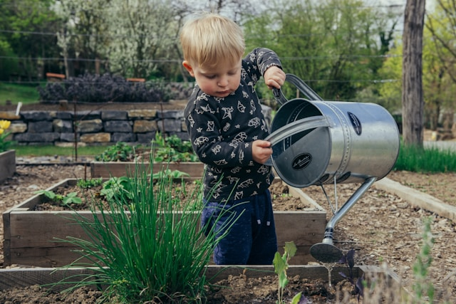

Plantio em Escolas

Levamos palestras educativas sobre meio ambiente para escolas públicas, seguidas de uma atividade prática de plantio. Ao final, cada estudante recebe um kit com sementes para cultivar em casa, levando a conscientização ambiental também para dentro das famílias.